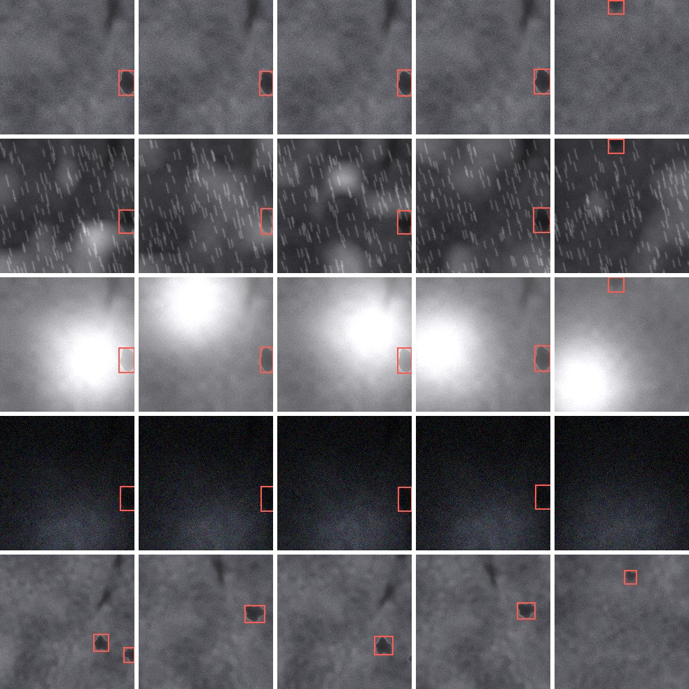
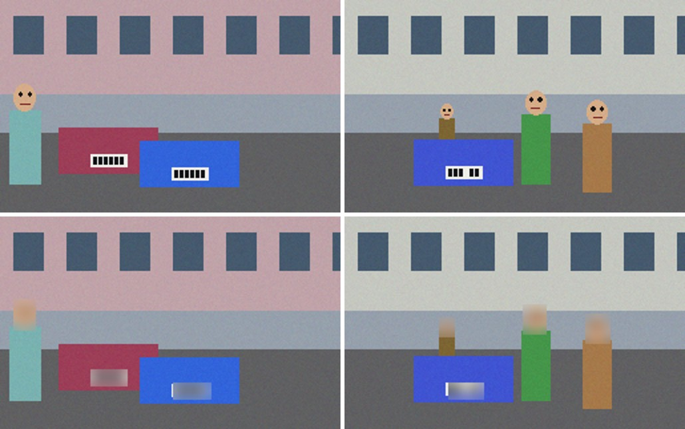

On a rain frame the detector puts two pothole boxes on one pothole: one with a score of 0.84 and an IoU of 0.81 with the truth, one with 0.61 and 0.66. How is the second box counted, and what removes it?
A true positive; nothing needs removing
A localisation error; a box guideline removes it
A duplicate, counted as a false positive; tighter suppression removes it
A background error; more rain frames remove it
Why. The better box claims the pothole. The second fits and has the right class, so it is a duplicate; tighter suppression deletes it without any training.
Deployment
The model leaves the framework it was trained in
Where it was trained
Python, a training framework, a notebook with gigabytes of libraries, a graphics processor when one is free.
Where it will run
Al-Manar's roadside unit: two processor cores, no accelerator, a metered link, a small disk, one frame at a time.
An interchange format carries the model across: the network as a graph of standard operations plus its weights, in one file that an inference runtime can execute.
Export
Export runs the model once and writes down what happened
The exporter follows one example input through the network
By default every size of that example is frozen into the graph
Name the axes that must stay free: here batch, height and width
model.eval() first: the outputs you compare against must be inference outputs too
Parity
A copy is proven, not assumed: compare outputs within a stated tolerance
0.00002
largest difference between the original's and the runtime's raw outputs on eight frames, against a tolerance of 0.001 (lab 4.1)
The outputs are never bit-identical: the runtime fuses and reorders operations, and float arithmetic depends on the order
State the tolerance before you look
Orders of magnitude above rounding means something was exported differently
Parity, second level
Then compare what the user receives: the boxes
1 · Raw outputsscore and box maps agree within the tolerance
→
2 · Final boxessame count, same class, IoU of at least 0.99 with a partner
→
3 · Kept as a testten frames and their boxes, run on every export
From the lab: 30 boxes from the original, 30 from the export, parity 1.000. A tiny difference in a score can move a box across a threshold, so the raw outputs alone do not close the question.
The planted fault
The file was right and the prototype still saw potholes everywhere
boxes from the prototype on 32 frames where the original reports 30; parity 0.000
The camera library delivers BGR; the model was trained on RGB
Values arrive as 0 to 255; the model expects 0 to 1
No exception, no warning. A plausible list of boxes, only a wrong one. Most deployment bugs in vision live in the lines before the model.
The contract
Write down what the graph does and what the caller must do
Step
Rasid
Who can get it wrong
Channel order
RGB, outside the graph
The serving code
Value range
0 to 1, outside the graph
The serving code
Resize
Outside the graph, bilinear
The serving code
Mean and standard deviation
Inside the graph
Nobody
Decoding and suppression
Outside the graph, shared code
Whoever copies the settings
Checkpoint
The parity test fails the day before release
After a runtime upgrade the stored parity test reports a largest difference of 0.004 against a tolerance of 0.001, and 2 of 30 boxes have no partner. The model file did not change. What do you do?
Raise the tolerance to 0.01, since 28 of 30 boxes still agree
Release with the proven versions, and find what changed before upgrading
Release with the upgrade: differences this small are float rounding
Retrain the detector with the upgraded library installed
Why. Parity belongs to a pair of versions. The test caught a silent change: the proven pair is released, and the upgrade waits for an explanation.
The budget
The roadside unit states its budget before any model exists
60 ms
per frame at the 95th percentile, on the unit
2 MB
of model file, sent over a metered link
2
processor threads, no accelerator
The case's assumption: the unit takes three times as long per frame as the reference laptop. Your table says which settings are worth carrying to the unit, where the real measurement is made.
Measuring
Measure the median and the 95th percentile, after a warm-up
def summarise(ms):
return (float(np.median(ms)),
float(np.percentile(ms, 95)))
x = U.to_input(Xv[:1], size) # one frame
ms = U.latency_ms(
lambda: sess.run(None, {"image": x}), n=100)
One frame at a time, as the camera delivers them
The first runs are slow: discard them
A unit that is fast on average and slow on one frame in twenty drops that frame
Name the machine and the number of threads beside every latency
The levers
Three levers trade accuracy for latency and memory
Lever
What it buys
What it can cost
Input resolution
Work falls with the number of pixels
Small objects shrink below what the grid can see
Numeric precision
8-bit integers: a quarter of the file, faster integer arithmetic
Every number moves a little; some models lose accuracy
Batch size
More frames per second in total
Latency per frame: the first frame waits for the last
Re-measure accuracy after every change. No rule of thumb says which model loses how much. Only the same validation frames, run again, do.
Quantisation
Quantisation maps floats to 8-bit integers, and has to see real frames to do it
1 · Float modelweights and activations as 32-bit floats: 3.53 MB
→
2 · Calibraterun 32 training frames and record the range of every activation
→
3 · Quantisestore and compute in 8-bit integers: 0.93 MB
→
4 · Re-measureparity is gone by design: measure accuracy again
Calibration frames come from the training split and look like the field. Calibrate on daylight only, and the ranges are wrong at night.
From the lab
The benchmark table: one row per operating point
Precision
Input
Median ms
p95 ms
On the unit, p95 ms
File MB
AP at 0.5
Float, 32-bit
192 by 192
25.3
35.0
105.1
3.53
0.973
Float, 32-bit
160 by 160
18.0
28.5
85.6
3.53
0.973
Float, 32-bit
128 by 128
10.1
15.7
47.2
3.53
0.921
Integer, 8-bit
192 by 192
8.7
41.7
125.0
0.93
0.973
Integer, 8-bit
160 by 160
8.3
10.2
30.5
0.93
0.973
Integer, 8-bit
128 by 128
6.9
10.3
31.0
0.93
0.919
Lab 4.2, quick mode: 120 validation frames, two threads, one laptop processor. Unit latency is the laptop's times three, the case's assumption.
Deciding
The operating point is the most accurate row that meets every limit
def choose(table):
ok = [r for r in table
if r["unit_p95_ms"] <= BUDGET_MS
and r["file_mb"] <= BUDGET_MB]
return max(ok, key=lambda r: r["ap50"]) \
if ok else None
Limits first, accuracy second: a row over the limit is not a candidate
From this run: 8-bit at 160 by 160, AP 0.973, about 31 ms on the unit, 0.93 MB
No row qualifies is a result too: report it with the nearest row and what would close the gap
This table and the chosen row are the evidence for outcome 5. The capstone asks for the same against the budget you state, with the machine named.
Checkpoint
Does it fit?
The budget is 50 ms per frame at the 95th percentile. On the unit, model A has a median of 31 ms and a 95th percentile of 64 ms; model B 38 ms and 46 ms. Model A is one point more accurate. Which do you deploy?
Model A: its median is lower and it is more accurate
Model A: the mean of its two numbers is under 50 ms
Neither, until both are measured again with batch size 8
Model B: it is the only one inside the budget
Why. The limit is on the 95th percentile. Model A breaks it, so its extra point of accuracy is not on offer.
The question from Day 1
The pilot fell from 95% to 43% in the field. Will this model?
What the pilot did
Trained on clean daylight, tested on clean daylight, and met dust, rain and night for the first time on the roadside.
What changes today
The field conditions are met in a test, on purpose, before the release. The test decides, and its rule is written first.
Three kinds of shift, from Day 1: corruption (rain, glare, night), viewpoint (a moved camera), population (another district). The first two can be imitated on frames you hold.
The test sets
Paired sets: the same road spots under each condition

Rows: clean, rain, glare, night, moved camera.
Each column is one test frame, drawn again: frame 17 of the rain set is frame 17 of the clean set, in the rain
Each spot is its own control: what differs is the condition, not which potholes were drawn
Only test-split segments, at a stated severity
Find the frame where the box is gone
The statistic
Report the drop per condition, with an interval on the drop
r = np.random.default_rng(seed)
vals = []
for _ in range(n_boot):
idx = r.integers(0, n, n) # frame numbers
vals.append(
U.mean_ap([pc[i] for i in idx],
[gc[i] for i in idx], 0.5)
- U.mean_ap([pf[i] for i in idx],
[gf[i] for i in idx], 0.5))
low, high = np.percentile(vals, [2.5, 97.5])
Resample the frames, and use the same drawn frames for the clean and the field score
Keep the difference each time
The spread of the differences is the interval of the drop
Pairing makes it narrower than two separate intervals would be
From the lab
Night costs the most, and its interval is the widest
Condition
AP at 0.5
Drop
95% interval of the drop
Clean
1.000
Glare
1.000
0.000
0.000 to 0.000
Rain
0.987
0.013
0.001 to 0.035
Moved camera
0.987
0.013
0.000 to 0.042
Night
0.924
0.076
0.022 to 0.159
Lab 4.3, quick mode: the supplied detector on 90 paired test frames, 120 resamples.
The decision
The release rule is written before the test is run
Upper end of the drop interval
Decision
From the lab
At most 0.10
Pass
Glare, rain, moved camera
At most 0.30
Release with a human check: an inspector confirms each detection before a crew is sent
Night (upper end 0.159)
Above 0.30
Hold: the detector does not run under this condition
None
The rule uses the upper end, not the estimate. A condition tested on few frames has a wide interval and fails until someone collects more. That is the rule working.
The memo
"Release" is rarely one word: it is a list of conditions
The release memo, one page
The model and its version. The test: 90 paired frames, clean AP 1.000. One row per condition: drop, interval, decision. What happens under each decision, and who does it.
What the test did not cover
Dust. Motion blur. Districts one by one. Conditions together, such as rain at night. Real cameras. Say so in the memo.
Add districts as rows. Results by lighting, weather and district, so that no part of the city is served worse unnoticed.
Checkpoint
Release, check or hold?
The rule: pass when the upper end of the drop interval is at most 0.10, human check up to 0.30, otherwise hold. In fog the detector's drop is 0.08 with an interval from 0.01 to 0.33, measured on 25 frames. What is the decision?
Hold in fog, and collect more fog frames to narrow the interval
Pass: the drop of 0.08 is below 0.10
Release with a human check: the truth is probably in between
Pass: with only 25 frames the interval is too wide to count
Why. The upper end is 0.33, above 0.30. The interval is wide because the test is small, and the remedy is more frames, not a kinder reading.
Privacy
Street frames hold faces and number plates: blur them before anything is stored

Top: as the camera delivers them. Bottom: as stored. Drawn frames; no real person or vehicle.
A road-damage system has no use for a face or a plate
They are personal data, so the pipeline blurs them before storage
"Before" is an order of steps: no log, cache, queue or backup sees the raw frame
From the lab
"We blur faces" is a claim until the leak is measured
Blur detections with a score of at least
Padding
Faces and plates still readable
Pixels blurred
0.5
none
29.9%
1.2%
0.5
3 pixels
17.4%
2.6%
0.2
none
16.0%
1.5%
0.2
3 pixels
0.7%
3.2%
Two separate causes. Boxes that ran tight, repaired by padding. Detections the detector was unsure of, caught by a lower threshold. Either fix alone leaves one in six.
The operating point
For privacy the operating point is recall, bought with false alarms
The pothole detector
A false alarm sends a crew for nothing; a miss leaves a hole. The two costs are balanced, and the threshold sits in the middle.
The face and plate blur
A false alarm blurs a patch of wall, which costs the road engineers nothing. A miss stores a readable plate. The threshold goes low.
The price in the lab: blurred pixels rise from 1.2% to 3.2% of the frame. For a road department that price is nothing.
Monitoring
A monitor that pages for weather is switched off within a week
12 of 12
cameras raise an alert when the monitor is "brightness left its first-week range" (lab 4.4, 30 days)
It rained on three days and every camera went dark together
Nothing was wrong with any camera
A useful monitor fires on what a technician can fix, and stays quiet otherwise
From the lab
Two monitors, each with a signal, a band and a run length
Monitor
Signal
Band
Run
Caught
Moved camera
Offset of the lane markings, in pixels
Within 5 pixels of the installed position
2 days
CAM-07 on day 20, one day after the knock
Dirty lens
Sharpness against the camera's own first week
At least 85% of its first-week median
3 days
CAM-03 on day 14, five days after the dust began
Both stay silent on the three rainy days. Rain darkens a frame; it does not move the lane markings, and it does not last three days.
Documentation
The model card is where the week's evidence is kept
What it is for
The task, the cameras, the classes. What it must not be used for.
Data
The guideline and its agreement score, the split report, the licence record of the weights.
Results
By lighting, weather and district, with intervals. The error breakdown.
How to run
The operating point, the benchmark table, the preprocessing contract.
Limits and people
The conditions in which a person checks a detection before a crew is sent.
Privacy and monitoring
The blur and its measured leak rate, the monitors and who is paged.
Checkpoint
Which monitor do you add?
A counting camera's daily vehicle count falls by a third and stays there. The counts of the neighbouring cameras are unchanged, and it has not rained. Which monitor would have told the field team why?
The brightness of the frames against the first week
The count itself against last month's average
The offset of the lane markings from their installed position
The mean score of the detections per day
Why. One camera, a lasting step, no weather: the camera was moved, and the counting line no longer lies where it was drawn. The offset monitor names a fault a technician can fix.
Day 4 recap
Three things to keep
Prove the copy
Raw outputs within tolerance, the same boxes, and the test kept. The prototype's 816 boxes came from the lines before the model.
Budget on the tail
Median and 95th percentile per operating point, accuracy measured again after every change, the machine named.
Rule first, then the test
Drops per condition with intervals, a decision per condition, a blur whose leak is measured, monitors that stay silent on rain.
Next
Capstone · A service that meets its budget
An inspection or counting service for Al-Manar in a public repository, with a field-conditions test set, a model card and a release memo, defended on a failure case the assessor picks.
Bring the task and the budget you wrote in lab 4.4
Make the repository public, with one command that re-runs the evaluation
Expect a held-back condition: your evaluation is re-run on it live